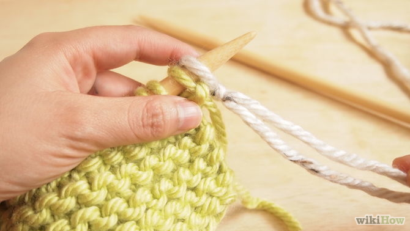

Cast on 10-40 stitches using your first color of yarn, depending on the size of your needles and desired width.
- If you are a beginner knitter, you should make a relatively small scarf, enough to keep you warm, but avoid making it so wide that it takes too long to knit.
- If you are knitting with worsted weight yarn and size 8 to 10 needles, you'll need to cast on 30 to 40 stitches for a nice-sized scarf.
Knit for 12 rows with the first color.
Remember that you do not have to knit another color if you do not want to, and you do not have to knit the other color immediately, either.- You can knit to this point, then put it down, and return later or tomorrow to continue. This is what makes knitting so great. Never leave your knitting in the middle of a row, or it will pull funny.
Cut the yarn with scissors after you complete the 12th row.
Make sure to leave a 6-inch tail.- If you choose not to have a second color, then skip this step and just continue knitting in the one color all the way to the end.
- If you plan to make a single-colored scarf, check the dye lot listed on the yarn label. Make sure to get the same dye lot to avoid manufacturing variations in color. (If you are buying one ball of each color, you do not need to worry about the dye lot.)
Add a second color of yarn to the first color.
This will make your scarf look professional and coordinate with more outfits.- Align the end of the tail of the first color with the beginning of the second color of yarn. Hold them together in your left hand, away from the thread of the new color that you'll be knitting.
Start knitting with the second color of yarn.
Knit about 5 stitches and stop to pull on the ends.Leave the ends loose.
Later, you'll weave them into the scarf with a tapestry needle or crochet hook.- Never tie knots to change colors when you are knitting. You can usually see them, and it makes it difficult to correct mistakes.
Knit 12 rows with the new yarn.
Follow the same process you did with the first color.Add your third color of yarn (if you choose).
Follow the instructions given above for adding the second color yarn. Cut the yarn with your scissors and again leave a 6-inch tail.- You can do this as many times as you like! You can also have smaller or larger sections if you prefer to have a dominant color.
Knit 12 rows again, as with the second color.
Make sure to maintain focus and not go on autopilot--you could drop a stitch inadvertently.- Keep alternating colors as instructed, doing 12 rows of each, until the scarf reaches a desired length. The scarf, when finished, will have a pattern of three different colors.
Cast off your stitches.
Wrap your scarf around your neck and admire your own handiwork. Feels good, doesn't it?- Use a crochet hook to weave your loose string into your scarf, hiding the end. A knot can be seen and look a little haphazard.


